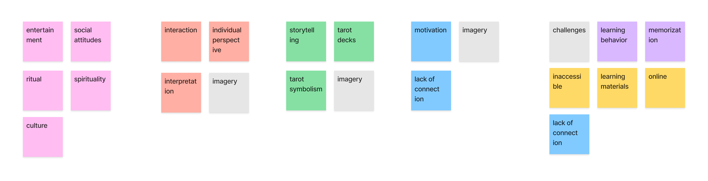
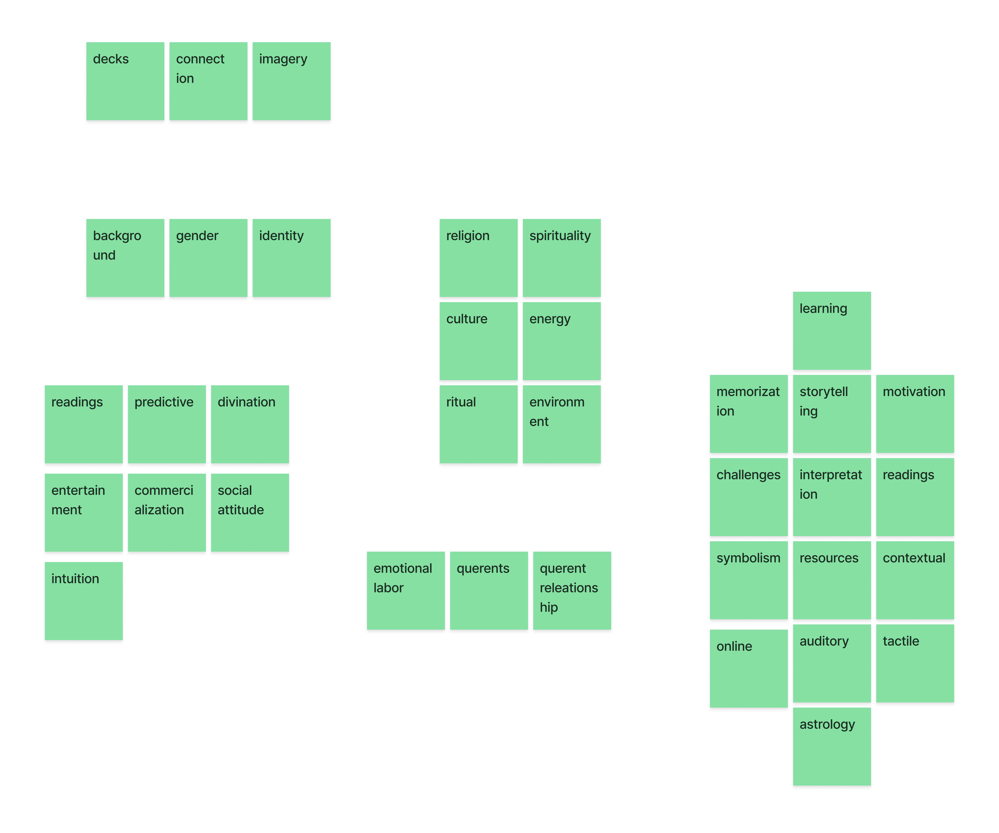
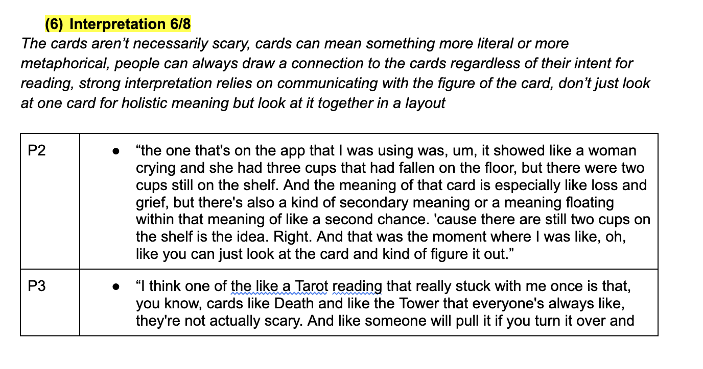
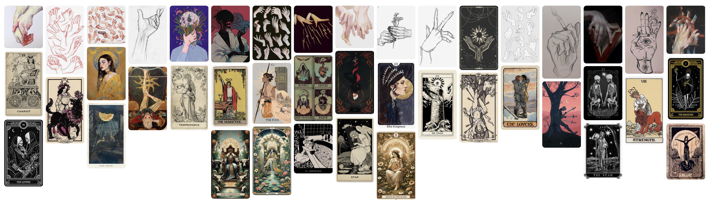
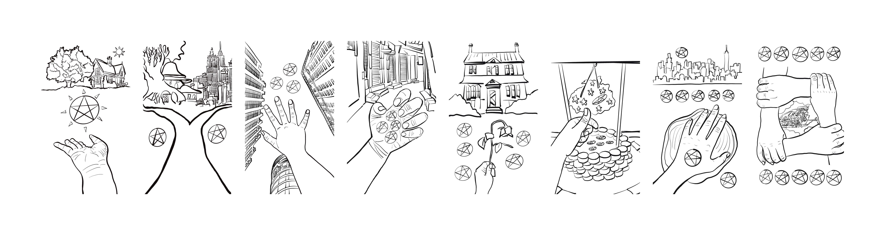

Thesis Weekly Update #1
January 29, 2024: Project journal & project planning document
Project Journal
For my Thesis project, I will be designing my own tarot deck, as well as accompanying learning materials, specifically catered to novice tarot readers. My aim is to target two areas of learning involved in tarot reading: (1) recalling each card’s core meaning and (2) building contextual narratives with cards in a layout. With this project, I hope to guide novice tarot readers with fundamental skills while encouraging them to trust their intuition as they progress with increasingly complex readings.
For my final deliverables, I will design an original deck of tarot cards, a traditional booklet that describes each card’s core meaning, a workbook with daily prompts for a month of learning, and a website that provides guidance for reading card layouts.
Last semester, I conducted a total of 8 interviews and 1 photo study to gain further insights into the culture of tarot reading, as well as challenges and strategies related to learning. Of the 8 interviews, 4 were with subject-matter experts, professional tarot readers and astrologers specifically. My goal was to learn more about the rituals of tarot and the relationships between reader and querent. The remaining 4 interviews were with novice, intermediate, and advanced self-taught tarot readers. My goal was to identify key challenges in their tarot learning journey, as well as strategies they found helpful in learning. Afterwards, I conducted a photo study of a tarot reading between one of my expert interviewees and a friend, who was the querent. I photographed the card layouts and hand gestures. In addition, I recorded the conversation to analyze the reader-querent dynamic.
The interviews and photo study revealed many important findings and insights that influence my design direction for this project.
- People read tarot for many reasons, such as receiving spiritual guidance, to predict the future, to process emotions, or purely for entertainment. This broadens the audience’s connection to key imagery and symbolism in tarot, which calls for striking a balance between “universal” symbolism and context-specific (e.g. culture-specific) symbolism.
- Querents tend to ask questions about career, home, relationships, and any form of decision making. These questions can be predictive or they can be addressing a present scenario. Sometimes querents have an idea of what the outcome or answer is, but they seek confirmation or clarity from the tarot reader.
- There are many challenges to learning tarot. A common challenge is rote memorization of 78 core meanings, especially when the reader doesn’t connect with the cards’ imagery. Another challenge is the vast amount of resources available, especially online; there tends to be conflicting interpretations and they often overgeneralize all decks. A third major challenge is surmounting the step of learning each card and then applying that knowledge in a layout, especially with the querent’s added perspective and context.
- There are many tarot learning strategies to engage in. Many recommended working with one tarot deck and set of interpretations at a time. It’s important to really like the deck you’re working with, to be drawn to its imagery and to have an easy time connecting with its symbolism. When learning layouts, it’s always best to start simple, usually with 3 cards max. Many recommended learning individual cards by drawing a card per day, either in the morning or at night, to help connect core meanings to daily events. Lastly, successful tarot readers are able to rely on their own intuition during readings, so it’s important not to be too dependent on other people’s/resources’ interpretations; just trust your gut and draw meaning from the imagery alone first.
I conducted all my interviews over Zoom and phone calls. I audio recorded all of them and video recorded the Zoom sessions. Afterwards, I transcribed the audio and coded them using Taguette. I grouped the codes together on FigJam to arrive at several themes, which I further fleshed out in Google Docs. I followed this same process with my photo study, working with both the transcript of the session and pulling symbols and themes from the visuals of tarot reading, such as card layouts and hand gestures.


After interviewing experts and stakeholders, I learned that it’s best practice to focus on one or a few resources at a time when learning tarot. I decided to focus on three books that I’ve relied on consistently when I first learned tarot. I spent winter break reading through them and breaking down core interpretations for the cards. I also drew connections to linked cards based on numerological and astrological similarities. With this analysis, I moved into FigJam to generate ideas for my own tarot card imagery. Two design ideas I have are (1) drawing most cards (except the Court cards) as POV shots and (2) drawing metaphorical bridges/portals between the Major Arcana cards to suggest a narrative throughline. In addition, I’ve started a Pinterest board to help inspire ideas about imagery and color palettes for my own deck.



I currently have a designed workbook for the diary study, as well as inked drawings of some tarot cards. The workbook contains 20 prompts, with the aim of having the tarot learner complete 5 daily prompts per week. The sketches featured below belong to the Pentacles suit.


This week, my goal is to continue drawing the cards and to print a deck by next week.
Tentative Project Schedule
| Timeframe | Milestone Details |
|---|---|
| January 22 - February 5 |
|
| February 5 - February 12 |
|
| February 12 - March 4 |
|
| March 5- March 11 |
|
| March 12 - April 2 |
|
| April 3 - April 12 |
|
| April 13 - April 20 |
|
| April 21 |
|
| April 21 - May 6 |
|
Materials/Tools
- Digital - Procreate (already downloaded on iPad), Adobe Illustrator, Adobe Photoshop (via NYU IDM subscription)
- Card paper - high quality card stock, 300 GSM minimum (Staples, Michaels, Blick Art Materials); vellum finished paper
- Embossing/debossing tools (Michaels, Blick Art Materials)
-
Website
- HTML/CSS, JavaScript with Visual Studio Code (already downloaded)
- Hosting on Github
- Generate custom domain - Github Pages, GoDaddy
Resources
- Rider-Waite deck
- The Wild Unknown deck & booklet
- The Ultimate Guide to Tarot: A Beginner's Guide to the Cards, Spreads, and Revealing the Mystery of the Tarot by Liz Dean
- How to Read the Tarot: The Keyword System by Sylvia Abraham
- Foil embossing tutorial
- Debossing tutorial
- Teachable Machine
- Instagram, Facebook, Tumblr, LinkedIn - advertising for participants for diary study and website user testing
Resources will be regularly updated on the Resources page.
People
- Professor De Angela Duff, IDM
- Lauren Race, IDM/ITP
- Monica Chan, IDM
- Ivy Hu, IDM
- Tony Pizza, IDM
Space
- Tarot deck & booklet printing
- NYU Print Lab
- Blick Art Materials (41 Flatbush Ave Brooklyn, NY 11217)
- Minuteman Press (305 Atlantic Ave Brooklyn, NY 11201)
- Remsen Graphics (52 Court St Brooklyn, NY 11201)
- Workbook printing and binding
- Printleaf (final version)
- Staples Printing (diary study)
- Website user testing - NYU, Barnard/Columbia, virtually over Zoom